Gallery
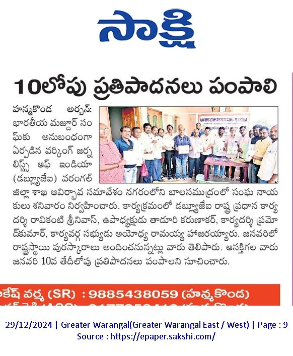
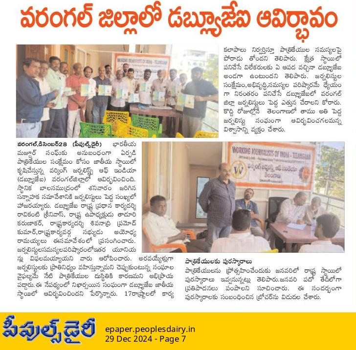
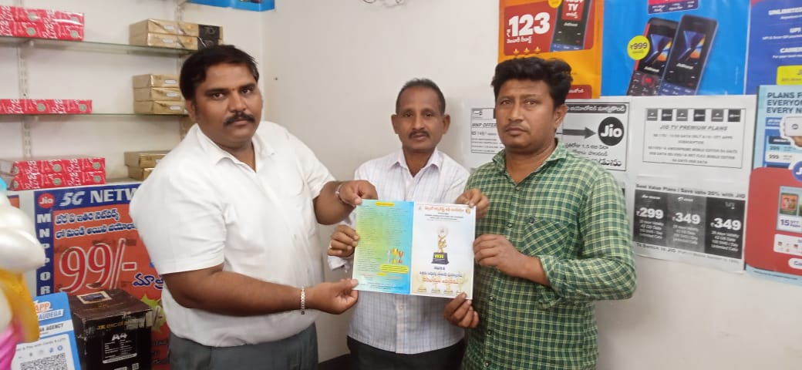
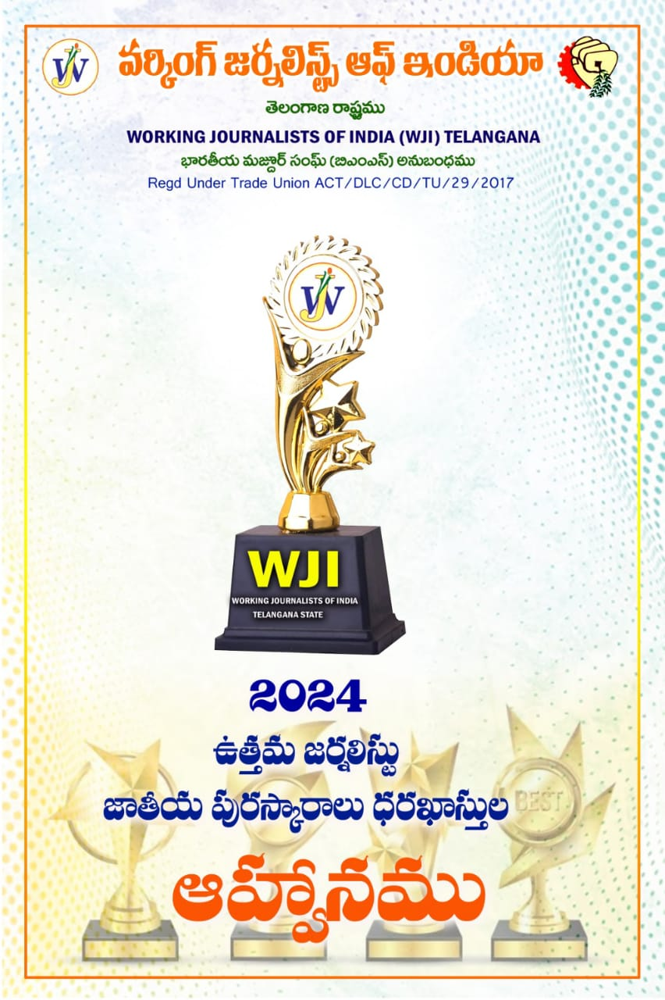
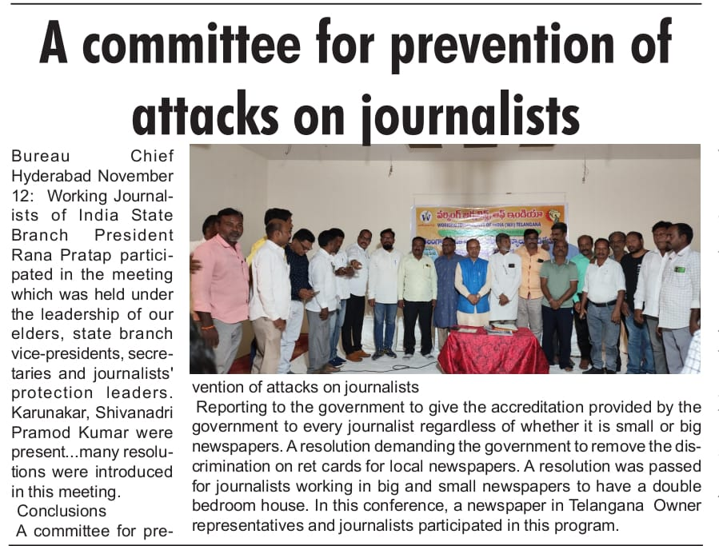
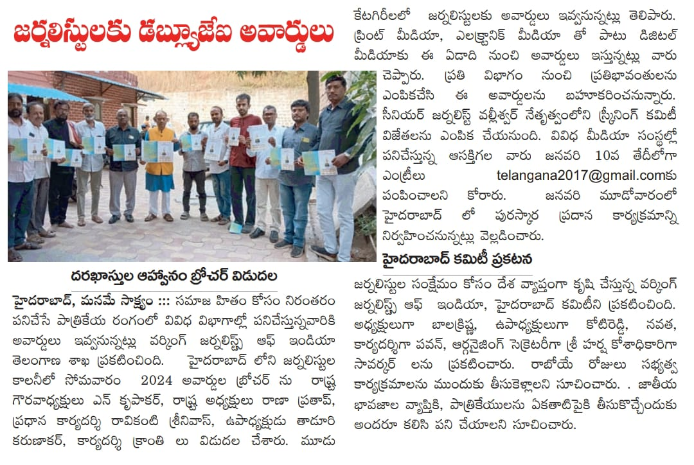
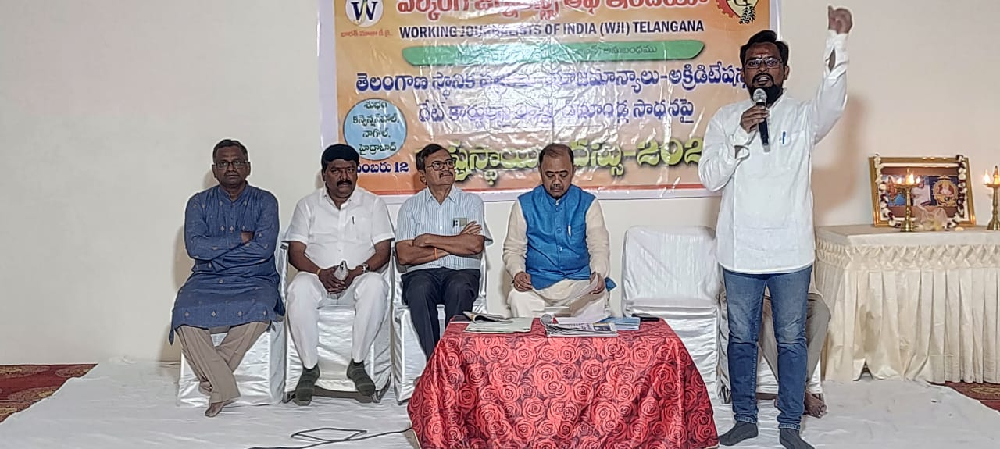
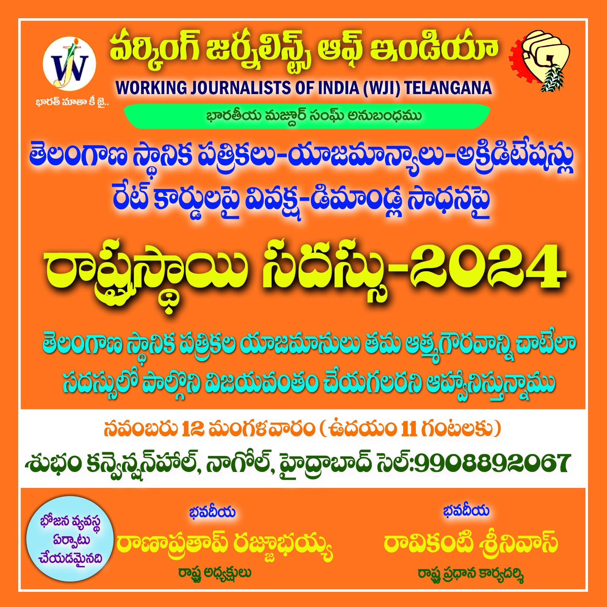

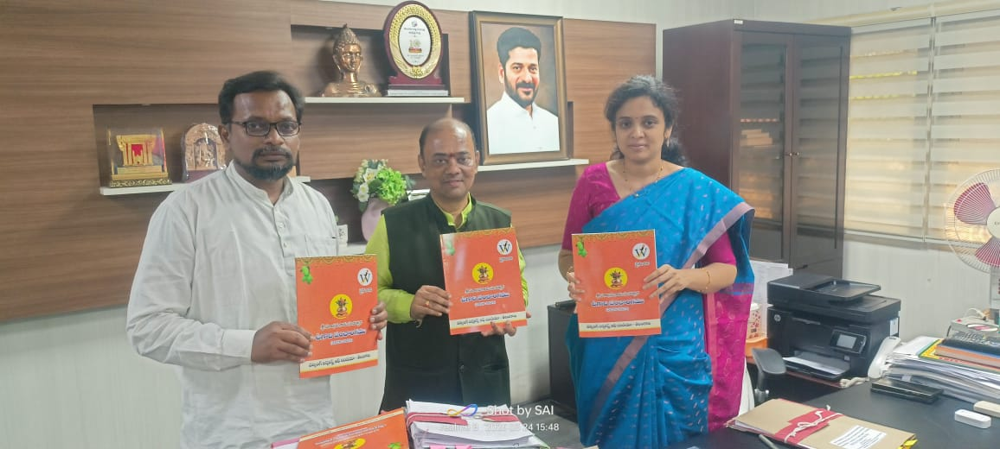
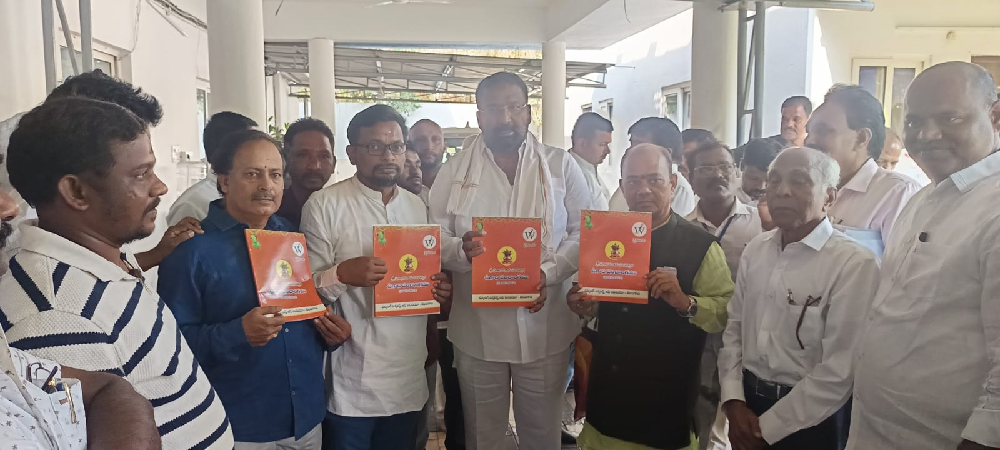
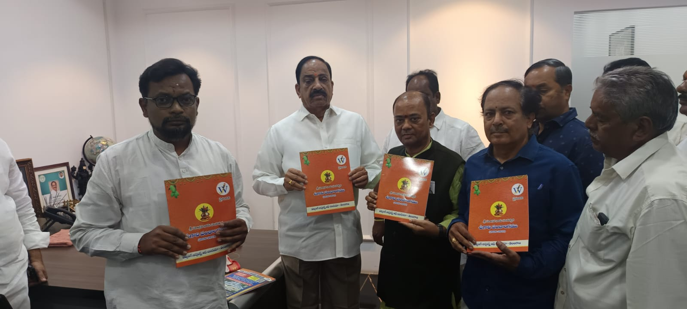
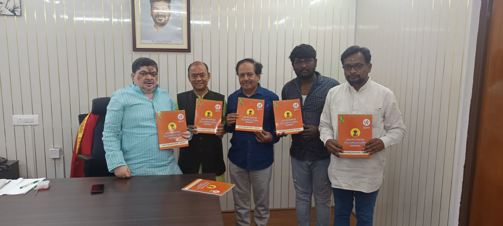
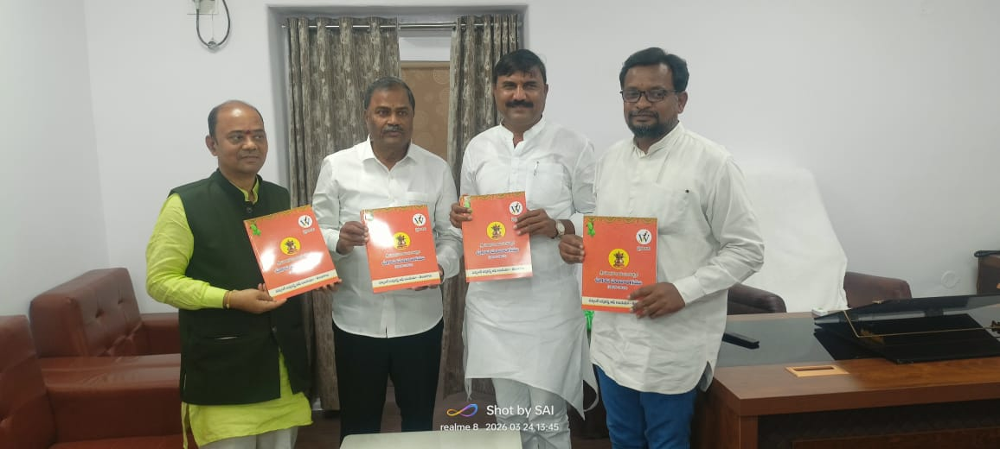
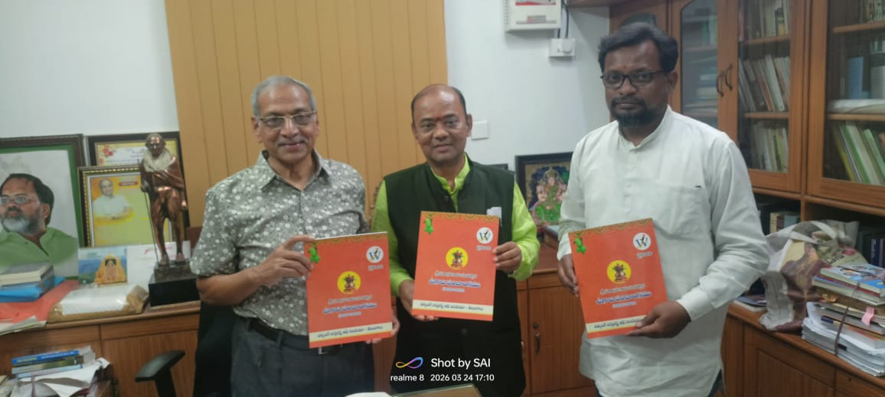
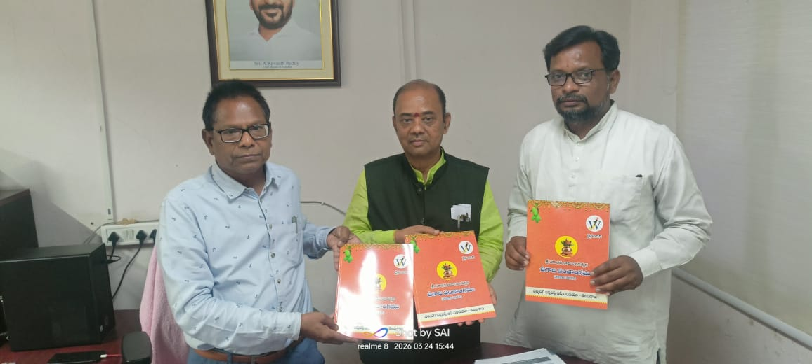
About WJI Telangana
WJI Telangana (Working Journalists of India, Telangana Chapter) is a professional organization dedicated to uniting, supporting, and empowering journalists across print, electronic, and digital media in the Telangana region. Committed to the principles of truth, transparency, and accountability, the organization works tirelessly to protect journalist rights, promote ethical journalism, and advocate for press freedom. Through various initiatives including press meets, training workshops, awareness campaigns, and welfare programs, WJI Telangana provides a strong support system for media professionals while fostering a united community that contributes to a fair and informed society. Led by a dedicated team of experienced journalists including President Rana Pratap, Hon'ble President Nandanam Krupakar, General Secretary Ravikanti Srinivas, and Advisor G. Valleeswar, the organization serves as a collective voice for journalists, ensuring their rights are protected and their contributions to democracy are recognized and valued.
Our Mission
- Protect journalist rights
- Promote ethical journalism
- Support media professionals
- Strengthen journalist voices
Our Vision
Build a united and independent journalist community contributing to a fair and informed society.
Activities
- Press Meets
- Training Workshops
- Awareness Campaigns
- Welfare Programs
Recent Activities
| Date | Activity | Location | Description |
|---|---|---|---|
| 19 Mar 2026 | Ugadi Calender Release | Hyderabad | Festival |
| 10 Mar 2026 | Press Meet | Hyderabad | Media awareness program |
Members
Rana Pratap
President
Nandanam Krupakar
Hon'ble President
Ravikanti Srinivas
General Secretary
G. Valleeswar
Advisor
Contact Us
Hyderabad, Telangana
+91 98490 33410
wji.telugu@gmail.com